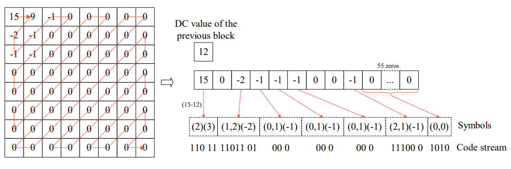

JPEG: Image compression algorithm
Mariusz Najwer
Wrocław, 1.01.2022
What is JPEG?
JPEG stands for Joint Photographic Experts Group, which was a group of image processing experts that
devised a standard for compressing images (ISO).
- JPEG (or JPG) is not really a file format but rather an image compression standard
- JPEG is a lossy compression method
- The JPEG standard
is complicated with many different options and colour space regulations
Lossy compression vs Lossless compression
- Lossy compression is when the compression happens it losses data and it never cannot be remade to the
original image
- Lossless compression is it does not loose data when compression happens and it can be regenerated to
the original image
The JPEG algorithm is designed specifically for the human eye. It exploits the following biological
properties of human
sight
We are more sensitive to the illuminocity of color (100 Milion Rods in eye), rather than the
colour (6 Million Cones in eye).
We are not particularly sensitive to high-frequency content in images (contours).
The algorithm
- Colour Conversion (RGB to YCbCr)
- A 2D discrete cosine transform
- A quantization (filtering) stage
- Huffman encoding
Colour Conversion (RGB to YCbCr)
RGB:
R - Red, G - Green, B - Blue
YCbCr:
Y - brightness of the image,
Cb - blue difference relative to the green colour,
Cr - red difference relative to the red colour
\[
\begin{bmatrix}
Y & Cb & Cr
\end{bmatrix}
=
\begin{bmatrix}
R & G & B
\end{bmatrix}
*
\begin{bmatrix}
0.299 & -0.168935 & 0.499813 \\
0.587 & -0.331665 & -0418531 \\
0.114 & 0.50059 & -081282
\end{bmatrix}
\]
Just transform pixel from space colour to another space colour with matrix
A 2D discrete cosine transform
We need to cut the image into 8x8 blocks \(g(m),\) then make 2D DCT on all these blocks
\[
\ G(k) = \sqrt{\smash[b]{\frac{2} {N}}} \sum_{n=1}^{\ N - 1} g(m)cos(\frac {\pi k (2m+1)} {2 N})
\]
\[
k=1,2,...,N-1,
\]
A quantization
Next we apply a quantization const block 8x8 to \(G(k)\), which filters out the high frequency DCT coefficients. We do this for every 8x8 block
- We increase the number of zeros in the picture.
- Cr value and Cb value are downsampled.
- We are losing data
Huffman encoding from a quantization

How JPEG can be loaded?
- Baseline (PC encoding)
- Progressive (Web encoding)
Advantages of JPEG
- Less disk space
- For landscapes
- For web application (80% of images on Internet)
- Big support devices
Disadvantages of JPEG
- Bad for fonts, technical images and brand logo (artefacts)
- JPEG can't support transparency because it uses RGB color space
- https://www.youtube.com/watch?v=Q2aEzeMDHMA&t=798s&ab_channel=Computerphile
- http://pi.math.cornell.edu/~web6140/TopTenAlgorithms/JPEG.html
- https://www.youtube.com/watch?v=Kv1Hiv3ox8I&t=703s&ab_channel=BranchEducation
- https://en.wikipedia.org/wiki/JPEG
- https://medium.com/hd-pro/jpeg-formats-progressive-vs-baseline-73b3938c2339